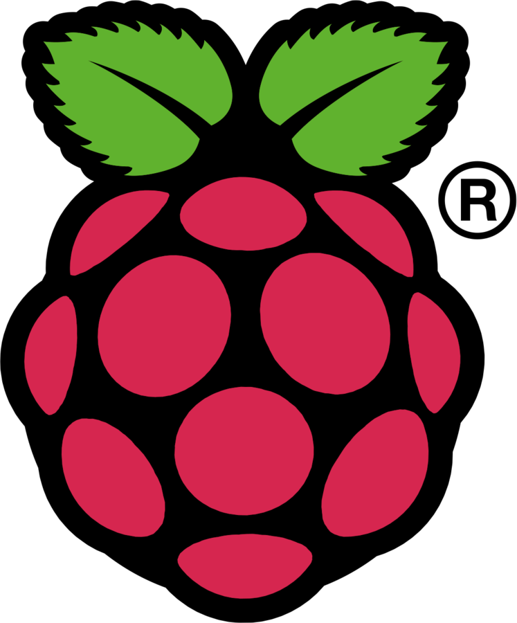
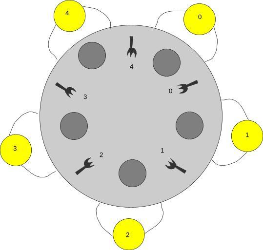
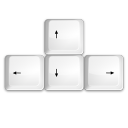

Systèmes d'exploitation avancés
Projet Raspberry PI
Développement multimédia
ORDONNANCEMENT SOUS RASPBIAN
Les principales politiques d'ordonnancement de Linux :
-
SCHED_FIFO Les processus sont rangés par ordred'arrivée en FIFO, et s'exécutent jusqu'à passer la mainou être préemptés.
-
SCHED_RR Ajoute à SCHED_FIFO le concept detime slice (temps maximum d'exécution avant de
passer la main). -
SCHED_OTHER Politique par défaut de Linux,proche de SCHED_RR à laquelle elle ajoutela notion de nice value.
PROBLEMES/SCENARI
Problème :
Dans le cas où un processus temps réel cohabite avec un
processus gourmand en ressources, et même si les deux ont
une politique d'ordonnancement similaire, le processus
temps réel peut ne pas réussir son traitement en temps voulu.
processus gourmand en ressources, et même si les deux ont
une politique d'ordonnancement similaire, le processus
temps réel peut ne pas réussir son traitement en temps voulu.
Scénario 1
PROBLEMES/SCENARI
Problème des philosophes :
Interblocage
Scénario 2
PROBLEMES/SCENARI
Problème :
Si un processus gourmand, doté d'une priorité supérieure
aux autres s'exécute, il peut garder la main très longtemps
et entrainer une famine pour les autres processus.
(Valable pour toutes les politiques, limité avec OTHER
car baisse de la nice value)
aux autres s'exécute, il peut garder la main très longtemps
et entrainer une famine pour les autres processus.
(Valable pour toutes les politiques, limité avec OTHER
car baisse de la nice value)
Scénario 3
PROBLEMES/SCENARI
Problème :
Si un processus a besoin d'obtenir la main dans un délai
"court", et qu'un processus de priorité supérieure conserve
le CPU trop longtemps, alors le traitement peut échouer.
Scénario 4
"court", et qu'un processus de priorité supérieure conserve
le CPU trop longtemps, alors le traitement peut échouer.
Scénario 4
PROBLEMES/SCENARI
Problème :
Si les processus sont en FIFO, un processus gourmand
qui ne rend jamais la main peut créer une situation de
famine pour les autres.
Pas implémenté car LINUX évite ce problème avec
la nice value : possible seulement sur le Mini_OS
qui ne rend jamais la main peut créer une situation de
famine pour les autres.
Pas implémenté car LINUX évite ce problème avec
la nice value : possible seulement sur le Mini_OS
PROBLEMES/SCENARI
Problème :
Ordonnancement collaboratif : quand un processus
a fini de parler, il passe la main au suivant.
Scénario 5
découverte de la conception d'un OS
Implémentation d'un ordonnanceur en C sur RaspberryPiFonctionnalités
- Ordonnanceur collaboratif
- Ordonnanceur préemptif
- Système de priorité entre processus
- Mise en place de sémaphores et mutex
- Mise en place d'un système de sleep()
- Quelques programmes de test
Ordonnanceur collaboratif
Les processus décident quand il veulent "laisser la main".
processA: yield() => processB Application : clignotement de la LED du Rasb Pi grâce à deux processus
ordonnanceurs préemptifs
Tous les process sont égaux (même quantum de temps CPU)
... tant qu'ils ont la même priorité.
Deux ordonnanceurs :
- Round-robin avec priorités
- Round-robin sans priorités
CHOIX des ordonnanceurs
Dans notre code:
create_process(&allumerLed, (void*) 0, COLLABORATIVE);
create_process(&eteindreLed,(void*) 0, COLLABORATIVE);
create_process(&calculer, (void*) matrice, UNPRIORITIZED);
create_process(&afficher, (void*) matrice, UNPRIORITIZED);
create_process(&processX, (void*) 0, 14);
create_process(&processY, (void*) 0, 15);
create_process(&processZ, (void*) 0, 15);
Ordonnancement
États
New : Le processus vient d'être lancé, il doit être initialisé
Ready: Le processus est prêt à être exécuté.
Waiting: Le processus attend d'avoir la main sur une ressource
Sleeping: Le processus dort (pour un temps donné)
Synchronisation
Sémaphore, Mutex
(Utilisent l'ordonnanceur, via l'état WAITING)
Problèmes rencontrés
. Round-robin, peu efficace dans certains cas
Fréquence de clignotement d'une LED: 3 fois plus faible si on a 5 processus supplémentaires.
. Allocation mémoire délicate
. Difficulté du debug "à la LED"...
. Différences entre le comportement de QEMU et le RPi
. Gestion difficile des interruptions
PROCESSUS POUR LE MINI OS
Exemples d'applications implémentées pour le mini OS

PROBLÈME DES PHILOSOPHES (1/2)
Ordonnanceur collaboratif
- Les philosophes mangent chacun leur tour
- Pas de problème de famine
- Besoin d'un ordonnanceur gérant le multi-processus et les ressources critiques
La led du Raspi clignote une fois pour le premier philosophe, deux fois pour le deuxième...
PROBLÈME DES PHILOSOPHES (2/2)
Ordonnanceur préemptif
- Gestion des ressources critiques (fourchettes)
- Interruptions et alternance des philosophes
- Deux philosophes (maximum) mangent à la fois
La LED du Raspi est allumée lorsque le philosophe 1 mange...
Lecteur MIDI
Programme qui compile et tourne... mais pas de musique !
Problèmes rencontrés
- init_hw dans le start_sched
-
Librairies non reconnues
- Différences entre l'émulateur et le Raspi (config.h)
Scénario: Sleep Sort
Un algorithme "marrant" pour ordonner des éléments avec la fonction sleep.
Scénario: "Priority' sort
Même chose, avec les priorités.
FIN
Merci !